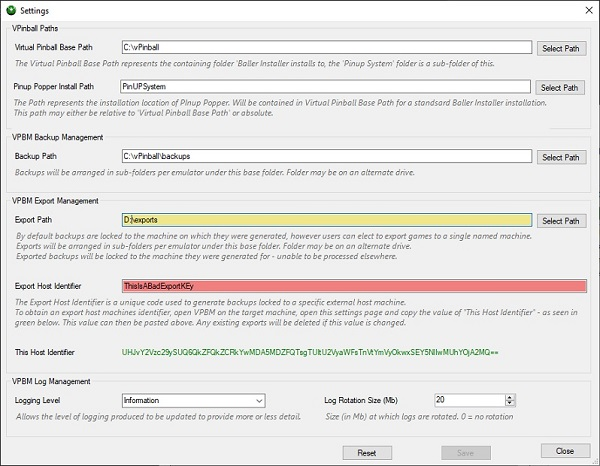
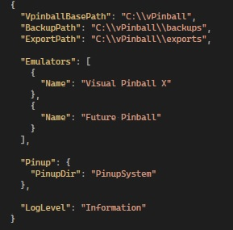
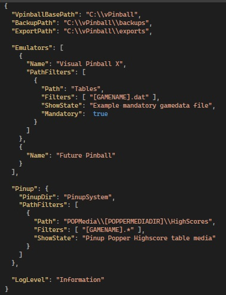

Virtual Pinball Backup Manager - managing your backups, one game at a time
Settings Overview
Settings are used to control finer details of how VPBM will operate. There are multiple ways of modifying settings targeting different experience levels.
Most users will be able to do all that they need using the File->Settings menu. This option is also the only way to add an Export Host Identifier to allow backups to be encoded for export to an alternate host. All backups are encoded to be only readable on the machine they were created on - but it is possibly to export these backups to be readable on another machine, using this setting.
More experienced users have the ability to edit the configuration file directly using a text editor, while advanced users are able to configure additional advanced filters to control the files assigned to each game.
Settings Menu

The Settings menu option found in the File menu provides a easy to use method for changing basic application settings. As can be seen in the screenshot, the Settings form provides integrated tips and information about the settings that are available for update, these will be discussed in more details below.
The Reset button can be used to revert available settings back to the default values.
The Save button can be used to save settings changes that have been made. Performing a save will restart the system so that the settings changes can take effect. The Save button is only enabled when there are valid changes to save. Values which have changed are shaded with a yellow background to highlight the proposed changes to the user.
The following values can be set:
Visual Pinball Base Path
This value is stored in the settings file as VpinballBasePath and represents the base of the Pinup Popper "Baller Installer" installation. Baller Installer installs all emulators plus the Pinup System software in a common base directory, which by default is C:\\vPinball. This value should only need to change if the Baller Installer installation path was altered.
Pinup Popper Install Path
This value is stored in the settings file as Pinup/PinupDir and represents the installed location of Pinup Popper. In a normal Baller Installer install, this sits inside Visual Pinball Base Path. This value can be relative to Visual Pinball Base Path (if it resides inside) or stored as an absolute path. The value will be saved as a relative value if it is inside Visual Pinball Base Path.
Backup Path
This value is stored in the settings file as BackupPath and represents the path that backups will be stored in. By default it is set to sit inside the VpinballBasePath, however in normally operation this is unlikely as backups will generally be stored on a separate disk, or even network drive. Example values for this include: D:\\backups and \\mynetworkserver\\C$\\pinballBackups, where the first example uses a backup folder on the D drive, and the second option connects to a network drive.
Export Path
This optional value is stored in the settings file as ExportPath. Only use this field if VPBM is being used to generate backups for a second 'target' machine. When this is the case a directory structure is setup to mimic the BackupPath structure, however all backups stored here are encoded for the target machine. Example values for this include: D:\\exports and \\mynetworkserver\\C$\\pinballExports, where the first example uses an export folder on the D drive, and the second option connects to a network drive. The ExportPath is only of use if an explicit Export Host Identifier value has been set.
Export Host Identifier
This optional value is not stored in the settings file. Only use this field if VPBM is being used to generate backups for a second 'target' machine. The value used to populate this field is a code representing the host machine for which exported backups will be generated. To obtain the code to use to support exporting of backups to a given host, a copy of VPBM must be installed on the intended target host (which is required to process backups regardless). Open the VPBM instance on the other host and open the corresponding Settings dialog (this dialog). Once on the Settings dialog, select and copy the (green) This Host Identifier text value and copy this text to this machine (via email, USR, or similar means). The value obtained can then be pasted into the Export Host Identifier text field to specify this host as the target of export files.
The Export Host Identifier will be shown shaded red if the current value is determined to be invalid. To test how this setting works, copy the local host identifier into the export host identifier and confirm that the created file can be opened on this machine. WARNING: Updating the Export Host Identifier value will result in all existing export files being deleted as they will not be valid with a new Export Host Identifier.
This Host Identifier
This value provides a read only view of the current machines host identifier which can be copied into another VPBM instances Export Host Identifier field. All games backed up by VPBM on this machine will use this host identifier to lock the backup files. Any backups imported to this machine from other machines must be encoded with this identifier to allow them to be extracted.
Logging Level
Provides the ability to alter the level of log detail produced. There are 6 levels available, in order from most granular to least, they are: Verbose, Debug, Information, Warning, Error, Fatal. The default level of Information is generally a suitable level to use, Verbose, or Debug would generally only be used by developers, while setting logging to Warning, Error, Fatal will reduce logging to only log in cases where abnormal events have occurred.
Log Rotation Size (Mb)
All log files are rotated daily. This value allows users to rotate logs based on the size of the log, such that when logs reach the specified size, the active log file is stored and a new log file initiated. A value of 0 indicates that no size based rotation will take place. Any other value indicates the size (in Mb) at which the log will be rotated. A maximum value of 200 is allowed.
Editing Settings File Manually
The process for manually editing settings is simple, open the file vPinBackupManager.json located in the VPBM installation directory using your preferred text editor and edit the appropriate files discussed above.

WARNING: The Name values within the Emulators and Pinup blocks must not be altered as this is designed to match values stored within Pinup System.
The basic content of a VPBM settings file is:
VpinballBasePath
This value represents the base of the Pinup Popper "Baller Installer" installation. Baller Installer installs all emulators plus the Pinup System software in a common base directory, which by default is C:\\vPinball. This value should only need to change if the Baller Installer installation path was altered.
BackupPath
This path represents the path that backups will be stored in. By default it is set to sit inside the VpinballBasePath, however in normally operation this is unlikely as backups will generally be stored on a separate disk, or even network drive. Example values for this include: D:\\backups and \\mynetworkserver\\C$\\pinballBackups, where the first example uses a backup folder on the D drive, and the second option connects to a network drive.
ExportPath
This path is optional, and only of use if VPBM is being used to generate backups for a second 'target' machine. When this is the case a directory structure is setup to mimic the BackupPath structure, however all backups stored here are encoded for the target machine. Example values for this include: D:\\exports and \\mynetworkserver\\C$\\pinballExports, where the first example uses an export folder on the D drive, and the second option connects to a network drive. The ExportPath is only of use if an explicit Export Host Identifier value has been set.
Emulators
The emulators block contains a list of all supported emulators, identified by the name of the emulator - as it is known within the Emulator Setup page of the Pinup Popper Setup application.
While each emulator block only contains the emulator name empty by default, the blocks are designed to allow additional advanced settings to be added as needed. Refer to Advanced Settings below for additional settings that can be added here.
Pinup
The Pinup block, is provided to explicitly define the location of the Pinup System application. Like each emulator block, the Pinup block is designed o allow additional advanced settings to be added as needed. Refer to Advanced Settings below for additional settings that can be added here.
The PinupDir value may be absolute or relative (the default), when set to relative, the path is relative to the value of VpinballBasePath.
LogLevel
Provides the ability to alter the level of log detail produced. There are 6 levels available, in order from most granular to least, they are: Verbose, Debug, Information, Warning, Error, Fatal. The default level of Information is generally a suitable level to use, Verbose, or Debug would generally only be used by developers, while setting logging to Warning, Error, Fatal will reduce logging to only log in cases where abnormal events have occurred.
LogRotationSizeMb
All log files are rotated daily. This value allows users to rotate logs based on the size of the log, such that when logs reach the specified size, the active log file is stored and a new log file initiated. A value of 0 indicates that no size based rotation will take place. Any other value indicates the size (in Mb) at which the log will be rotated. A maximum value of 200 is allowed.
Advanced Settings

Advanced settings are only intended to be updated by users with an advanced knowledge of VPBM configuraiton, and allow a mechanism to add new global filtering rules for emulators.
By default, each emulator configuration in the Emulators configuration block contains only a Name value, providing a way for VPBM to identify the pinball emulators that it supports, similarly the Pinup configuration block contains only a PinupDir value indicating the location of the base Pinup System directory.
Advanced users can add configuration elements to these configuration blocks to alter the way the VPBM manages the backup/restore process. The core function performed by VPBM is to search for all files associated with an individual game and package these files up into a standalone game backup, this process is driven by a set of filters defined for each emulator type and pinup system which are used to identify files that match individual games.
The following built-in filters exist by default for VPBM.
The above filters make use of some VPBM variables, and allow VPBM to calculate their values at runtime, which are:
[GAMENAME]: The name of the game as found on disk, minus the game extension.
[GAMECODE]: A game 'code' extracted from the game script or Pinup Popper. This corresponds to the rom name of VPX games using ROMs, it also is the name used to create a Pup Pack folder for each game.
[POPPERMEDIADIR]: The subdirectory within the Pinup Popper POPMedia directory allocated to the given emulator.
Embedded within each emulator configuration is an additional PathFilters block, which by default is not used. This block however can be added to allow users to specify additional file filters that should be applied globally for a specific emulator, or Pinup System. This functionality should only be used where a new filter is to be applied to all games for a given emulator, in cases where a single game requires additional filters, refer to Custom File Filters.
The example image to the right adds two new "example" filters which would allow additional files to be added for games, they are:
Visual Pinball X
Path=Tables, Filters=[GAMENAME].dat - this filter would find any files in the Tables folder matching the table file, but with a ".dat" extension.
Pinup System
Path=POPMedia\[POPPERMEDIADIR]\Wheel, Filters=POPMedia\[POPPERMEDIADIR]\Wheel - This would support a new Pinup Display used to display high scores
The example filters in the example image identify the key fields that are populated for a new filter, they are:
Path: The base path of the filter, starting at the application (emulator or Pinup Systems) base path. This may not include wildcards but can make use of the VPBM variables described above.
Filters: This is a comma separated list of filters to append to the value of Path to define the entire filter, which can point to either a file or directory. This may include wildcards (*) and can make use of the VPBM variables described above.
ShowState: This field is optional, but if added, the text in it is used to add an additional quick reference panel to the top of the Selected Game Content panel.
Mandatory: Not shown in the example is a final field, which if added needs to be set to either true or false to highlight whether the file is required by the game. If using this field, then ShowState must also be set. Mandatory games show up red in the quick reference panel to the top of the Selected Game Content panel
Adding multiple PathFilter entries is possible, with each entry separated with a comma.